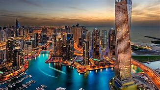

Bem-vindo
Aqui eu vou mostrar de forma simples algumas configurações para criar um site atrativo
vou dar algumas dicas do que colocar nas criações do seu site
uma das partes mais importantes de um site é seu conteúdo, customizar sua página de acordo com o assunto vai deixá-la muito mais chamativa.
customizar a página para deixa ela atrativa junto do conteúdo podemos usar imagens diversas para deixa ela mais bonita, uma ideia é utilizar de gifs e vídeos para diferenciar cada detalhe do seu site.
vou deixar um exemplo

o mais divertido é usar os gif como títulos e subtítulos que deixam o site diferentes já que normalmente os fundos são cores fixas, com isso as páginas ficam mais dinâmicas.
vou deixar uma segunda página mostrando isso clique aqui

na área das customizações é possível encontra a ferramenta Java script, estudar e aprender o Java é uma forma de avançar seus conhecimentos de programação a outro nível, é possível animar seu site inteiro o que deixa ele em um aspecto incrível.
darei uma amostra básica do que o script pode fazer
isso foi um exemplo básico do que o Java pode fazer, mas uma curiosidade é que essa é a mesma programação usada nos smartphones para colocar eles no modo escuro, já ouviu falar? Com isso já dá para ter uma ideia de até onde podemos ir com o Java.
existe muitos outros módulos semelhantes ao Java para usar quanto mais deles estiverem presente na página mais completa ela vai ficar.
precisa de ajuda?